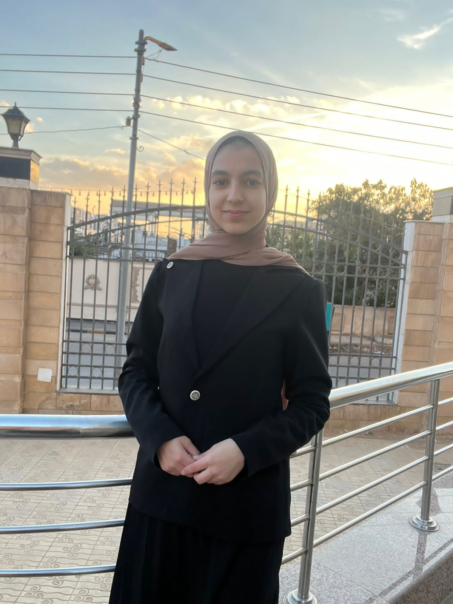

Passionate AI Engineer focused on building practical AI solutions that solve real-world problems. I work with Machine Learning, NLP, Computer Vision, and data-driven technologies to turn ideas into intelligent and useful solutions.

I’m an aspiring AI Engineer passionate about building practical AI solutions that solve real-world problems. My journey in AI has led me to explore Machine Learning, Deep Learning, Natural Language Processing, Computer Vision, and AI Automation. Through projects, training programs, and hands-on practice, I’ve gained experience working with Python, Scikit-learn, TensorFlow, PyTorch, OpenCV, Pandas, and SQL. I enjoy turning ideas and data into useful, intelligent solutions while continuously developing my technical skills. My goal is to apply AI to real business challenges, automate repetitive processes, and turn data into actionable insights. I’m particularly interested in building intelligent systems that are practical, scalable, and focused on delivering real value.
B.Sc. in Artificial Intelligence
2024 – 2028 · GPA: 3.6/4.0Python · C/C++ · SQL · Pandas · NumPy
Machine Learning · Scikit-learn · Data Preprocessing · Feature Engineering · Model Evaluation
NLP · Computer Vision · OpenCV
Git & GitHub · Microsoft Azure · n8n
DEPI · Jul 2026 – Present
Developing AI and Machine Learning solutions using Python. Working with Computer Vision, NLP, and Deep Learning using PyTorch, TensorFlow, OpenCV, and NLTK.
NTI · Aug 2025 – Sep 2025
Performed data preprocessing and exploratory data analysis using Python, Pandas, and NumPy.
Data preprocessing, feature engineering, machine learning model development, and model evaluation.
NLP solutions, text classification, chatbot development, and text preprocessing.
Image processing, image classification, and computer vision solutions.
A machine learning project focused on predicting student performance using academic and personal factors.
View Project →A machine learning project for predicting the presence of heart disease using patient health-related features.
View Project →An NLP-based chatbot designed to understand user queries and provide relevant responses.
View Project →Have a project in mind or looking for an AI solution for your business? Let’s connect and turn your ideas into practical, intelligent solutions.
Get in Touch →